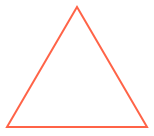
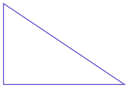
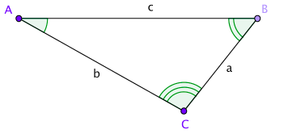
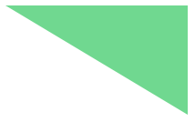

Kolmiot
procedure
(triangle sivun-pituus tyyli väri) → kuva
sivun-pituus : positiivinen-reaaliluku tyyli : mode? väri : image-color?
Example:
> (triangle 90 "solid" "springgreen")

Example:
> (triangle 70 "outline" "tomato") 
procedure
(right-triangle kateetin1-pituus kateetin2-pituus tyyli väri) → kuva kateetin1-pituus : positiivinen-reaaliluku kateetin2-pituus : positiivinen-reaaliluku tyyli : mode? väri : image-color?
Example:
> (right-triangle 80 120 "solid" "turquoise")
Example:
> (right-triangle 120 80 "outline" "slateblue") 
procedure
(isosceles-triangle kyljen-pituus huippukulma tyyli väri) → kuva kyljen-pituus : positiivinen-reaaliluku huippukulma : reaaliluku tyyli : mode? väri : image-color?
Luo tasakylkisen kolmion, jonka kyljen-pituus ja huippukulma on annettu.
Jos huippukulma on pienempi kuin 180, kolmio seisoo kannallaan, muuten se seisoo kärjellään.
Example:
> (isosceles-triangle 110 45 "solid" "tomato")

Jotta saat piirrettyä kolmion juuri tietyn pituisilla sivuilla tai tietyn suuruisilla kulmilla seuraava ryhmä funktioita voi olla avuksi:
triangle/sss, jos kaikki kolme kulmaa on tunnettu
triangle/ass, triangle/sas, tai triangle/ssa, jos kaksi sivua ja niiden välinen kulma on tunnettu
triangle/aas, triangle/asa, tai triangle/saa, jos kaksi kulmaa ja niiden yhteinen sivu on tunnettu.
Kaikki nämä piirtävät kolmion, jonka asento on seuraava:

procedure
(triangle/sss sivun-pituus-a sivun-pituus-b sivun-pituus-c tyyli väri) → kuva sivun-pituus-a : positiivinen-reaaliluku sivun-pituus-b : positiivinen-reaaliluku sivun-pituus-c : positiivinen-reaaliluku tyyli : mode? väri : image-color?
Piirtää kolmion, jossa kolmion sivun pituudet a, b ja c on annettu (sivun-pituus-a,
sivun-pituus-b, sivun-pituus-c).
Examples:
> (triangle/sss 40 60 80 "solid" "seagreen") > (triangle/sss 80 40 60 "solid" "aquamarine")
> (triangle/sss 80 80 40 "solid" "lightseagreen")
procedure
(triangle/ass kulma-a sivun-pituus-b sivun-pituus-c tyyli väri) → kuva kulma-a : reaaliluku sivun-pituus-b : positiivinen-reaaliluku sivun-pituus-c : positiivinen-reaaliluku tyyli : mode? väri : image-color?
Piirtää kolmion, jossa kulma A (kulma-a) sekä sivun pituudet b (sivun-pituus-b)
ja c (sivun-pituus-c) on annettu (katso kuva).
Examples:
> (triangle/ass 10 60 100 "solid" "seagreen")
> (triangle/ass 90 60 100 "solid" "aquamarine")
> (triangle/ass 130 60 100 "solid" "lightseagreen")

procedure
(triangle/sas sivun-pituus-a kulma-b sivun-pituus-c tyyli väri) → kuva sivun-pituus-a : positiivinen-reaaliluku kulma-b : reaaliluku sivun-pituus-c : positiivinen-reaaliluku tyyli : mode? väri : image-color?
Piirtää kolmion, jossa sivun pituus a (sivun-pituus-a), kulma B (kulma-b) sekä
ja sivun pituus c (sivun-pituus-c) on annettu (katso kuva).
Examples:
> (triangle/sas 60 10 100 "solid" "seagreen") > (triangle/sas 60 90 100 "solid" "aquamarine") 
> (triangle/sas 60 130 100 "solid" "lightseagreen")
procedure
(triangle/ssa sivun-pituus-a sivun-pituus-b kulma-c tyyli väri) → kuva sivun-pituus-a : positiivinen-reaaliluku sivun-pituus-b : positiivinen-reaaliluku kulma-c : reaaliluku tyyli : mode? väri : image-color?
Piirtää kolmion, jossa sivun pituudet a (sivun-pituus-a) ja b (sivun-pituus-b) sekä
kulma C (kulma-c) on annettu (katso kuva).
Examples:
> (triangle/ssa 60 100 10 "solid" "seagreen") > (triangle/ssa 60 100 90 "solid" "aquamarine") > (triangle/ssa 60 100 130 "solid" "lightseagreen")
procedure
(triangle/aas kulma-a kulma-b sivun-pituus-c tyyli väri) → kuva kulma-a : reaaliluku kulma-b : reaaliluku sivun-pituus-c : positiivinen-reaaliluku tyyli : mode? väri : image-color?
Piirtää kolmion, jossa kulmat A (kulma-a) ja B (kulma-b) sekä
sivun pituus c (sivun-pituus-c) on annettu (katso kuva).
Examples:
> (triangle/aas 10 40 200 "solid" "seagreen") > (triangle/aas 90 40 200 "solid" "aquamarine") > (triangle/aas 130 40 40 "solid" "lightseagreen")

procedure
(triangle/asa kulma-a sivun-pituus-b kulma-c tyyli väri) → kuva kulma-a : reaaliluku sivun-pituus-b : positiivinen-reaaliluku kulma-c : reaaliluku tyyli : mode? väri : image-color?
Piirtää kolmion, jossa kulma A (kulma-a), sivun pituus b (sivun-pituus-b) sekä kulma C
(kulma-c) on annettu (katso kuva).
Examples:
> (triangle/asa 10 200 40 "solid" "seagreen") > (triangle/asa 90 200 40 "solid" "aquamarine") > (triangle/asa 130 40 40 "solid" "lightseagreen")
procedure
(triangle/saa sivun-pituus-a kulma-b kulma-c tyyli väri) → kuva sivun-pituus-a : positiivinen-reaaliluku kulma-b : reaaliluku kulma-c : reaaliluku tyyli : mode? väri : image-color?
Piirtää kolmion, jossa sivun pituus a (sivun-pituus-a), kulma B
(kulma-b) sekä kulma C (kulma-c) on annettu (katso kuva).
Examples:
> (triangle/saa 200 10 40 "solid" "seagreen")
> (triangle/saa 200 90 40 "solid" "aquamarine")
> (triangle/saa 40 130 40 "solid" "lightseagreen")